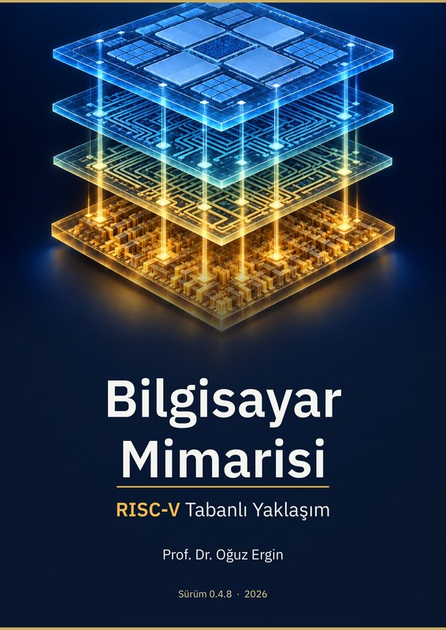
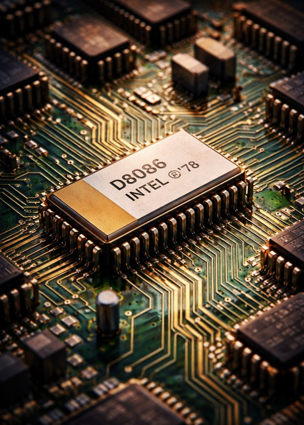
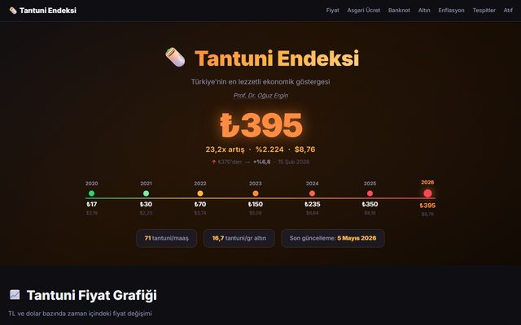
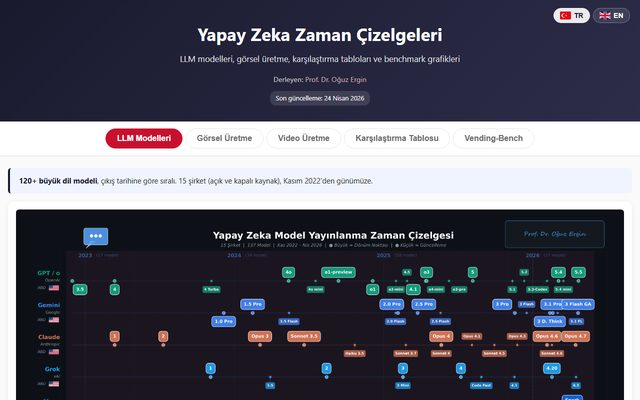
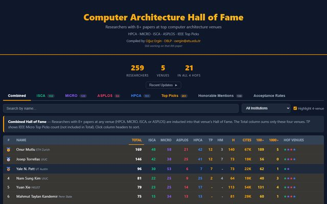
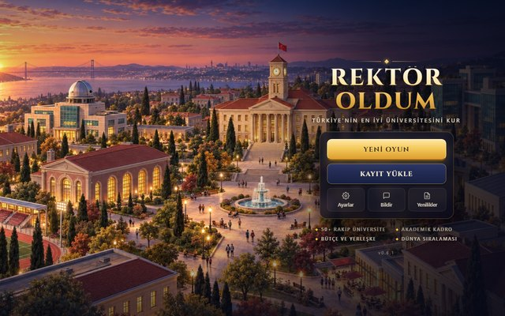
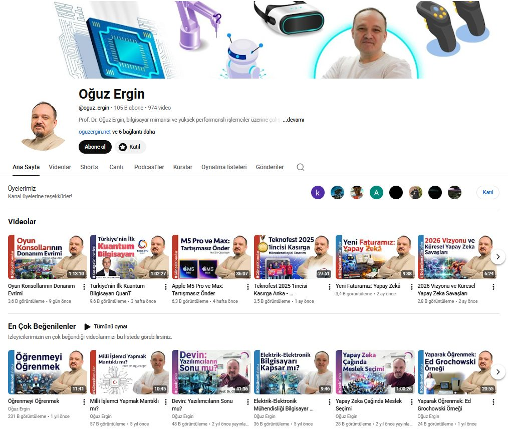

Bilgisayar Mimarisi: RISC-V Tabanlı Yaklaşım
Türkçe'de bilgisayar mimarisi alanındaki ilk RISC-V tabanlı, açık erişilebilir ders kitabı. Bölüm 1-5 + Ek A, C, D yayında; Ek B aktif çalışma.
 Oğuz Ergin
Oğuz Ergin
Bilim insanı kimliğimle ürettiğim açık kaynak çalışmalar, kitaplar, kamuya açık veri projeleri ve eğitim içerikleri. Akademik kariyerime ait özgeçmiş için Hakkımda sayfasına bakabilirsiniz.
Bu sayfada: Kitaplar · Açık Projeler · Yayınlar · Medya · Dersler
Türkçe bilgisayar mühendisliği eğitiminin yaygınlaşması için açık erişim ilkesini ön planda tutuyorum.

Türkçe'de bilgisayar mimarisi alanındaki ilk RISC-V tabanlı, açık erişilebilir ders kitabı. Bölüm 1-5 + Ek A, C, D yayında; Ek B aktif çalışma.

8086 mikroişlemci ailesi üzerinden mikroişlemci mimarisi ve çevirici dili programlama. 11 bölüm + 5 ek; LuaLaTeX kaynak. Şadi Çağatay Öztürk ile birlikte.
Üniversite birinci sınıf programlamaya giriş ders kitabı. Java dili üzerinden temel veri yapıları, kontrol akışı, nesne yönelimli programlama. TOBB ETÜ'de yıllarca temel kaynak olarak kullanıldı.
Kamuya açık veri, görselleştirme ve eğitim projeleri.

Enflasyonun günlük yansımasını Mersin tantunisinin fiyatından izleyen açık veri projesi.
tantuni.oguzergin.net
Büyük dil modelleri ve görsel yapay zekâ araçlarının zaman çizelgesi (TR + EN); 12+ benchmark karşılaştırma.
yapayzeka.oguzergin.net
HPCA, MICRO, ISCA, ASPLOS konferanslarının en etkili yazar/kurum görselleştirmesi (IEEE/ACM Top Picks ile entegre).
prof-oguzergin.github.io/CompArch-HallOfFame
Üniversite yönetim simülasyon oyunu: Football Manager mantığı, açık kaynak (MIT).
rektoroldum.oguzergin.netTüm kaynak kodlar: github.com/prof-oguzergin
Yirmi yıllık akademik kariyer boyunca üretilen 123 yayın ve 11 patent. Araştırma alanları: mikroişlemci mimarileri, DRAM güvenliği, dar değerli sayılar, enerji verimli devre tasarımı, yapay zekâ destekli sistemler. Bildiriler bilgisayar mimarisi alanının amiral gemisi ISCA, MICRO, HPCA konferanslarında; DSN, PACT, ICCD, ISLPED alanın önde gelen diğer konferanslarında; IEEE Micro, IEEE TC, IEEE TCAD, IEEE TVLSI dergilerinde.
Tam listeye erişim: ORCID · Google Scholar · DBLP · ResearchGate

Bilim, teknoloji, eğitim ve toplumsal konularda Türkçe içerikler: 960 saatin üzerinde. Bu kanal Yapay Oğuz sohbet asistanının eğitildiği arşivdir. Akademik sunumlar (ETH Zürich, Notre Dame, Edinburgh, vb.) Hakkımda sayfasında.
Diğer sosyal medya: LinkedIn · X (Twitter) · Instagram
Üniversite düzeyinde verdiğim dersler ve kanaldaki açık ders oynatma listeleri. TOBB ETÜ Bilgisayar Mühendisliği Bölümü'nde 18 yıl, Sharjah Üniversitesi'nde Ağustos 2024'ten bugüne ders veriyorum.
Ağustos 2024-günümüz · BAE · Bilgisayar Mühendisliği
2005-2024 · Türkiye · 18 yıl, 8 yıl bölüm başkanlığı
Ocak 2014 - Aralık 2014 · ABD · Visiting Associate Professor
2015–2016 ve 2017–2018 dönemleri · Türkiye · Adjunct Professor
Üniversitedeki dersleri sınıf dışında izlenebilir hale getirmek için YouTube kanalında derse özel oynatma listeleri. Bilgisayar Mimarisi ve Sayısal Tasarım, açık erişim ders kitaplarımla eşzamanlı izlenebilir.